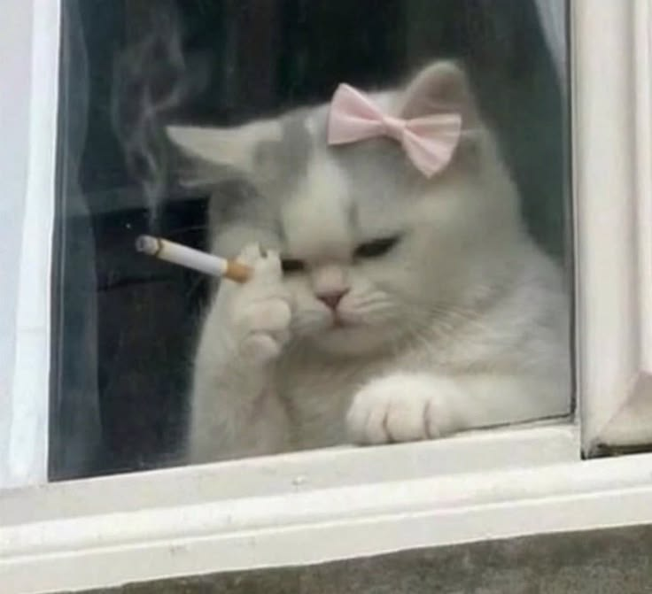
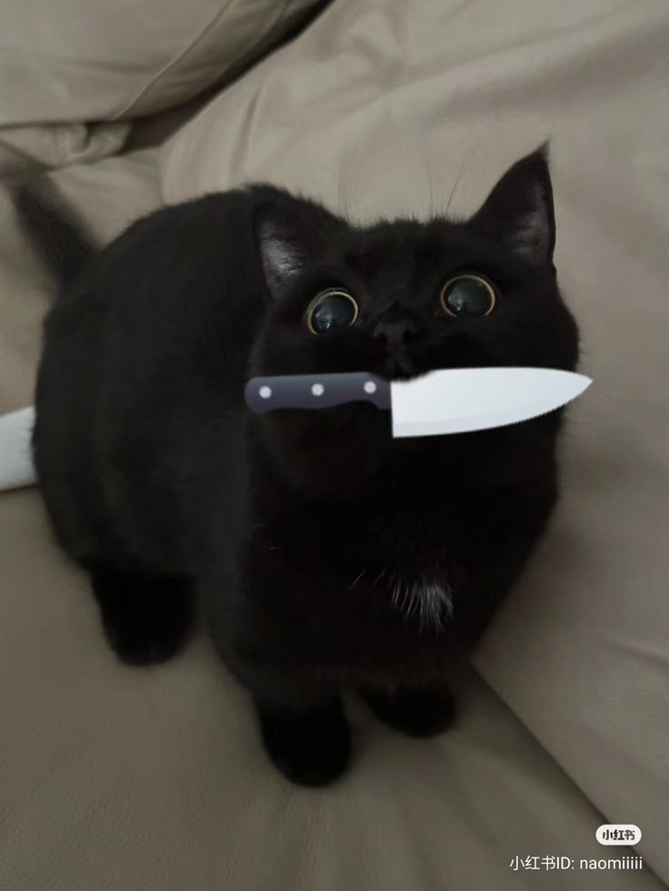

🐈 Руді коти

Руді коти — це сонячні зайчики у світі котів. Вони мають особливий ген, який відповідає за рудий колір.
🐈⬛ Сірі коти

Сірі коти — це елегантність та загадковість. Їх часто називають "блакитними" через особливий відтінок.
⬛ Чорні коти

Чорні коти — це наймиліші створіння, яких незаслужено бояться. Вони приносять удачу! 🍀